1.新建代码托管模块仓库
点击右上角的【+】，点击【新建仓库】菜单。
操作界面如下：
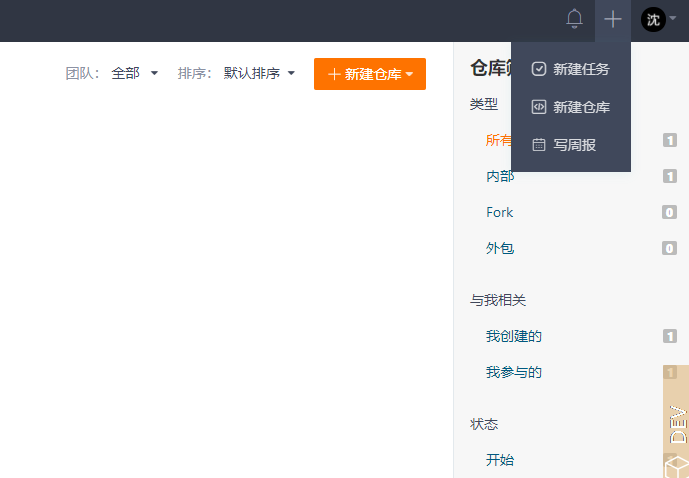
填写仓库名称，选择关联配置库,选择归属(当前企业/团队/物理子系统),选择仓库模型，然后点击【新建】按钮创建仓库。
操作界面如下：
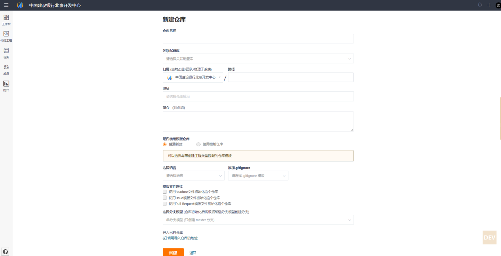
如下两项信息关系到后续的投产流水线流程：
1）关联配置库，后续可修改此配置库；
2）归属（当前企业/团队/物理子系统）选定后不可修改。
2.配置仓库成员
仓库负责人为仓库配置仓库成员信息，需选择所需要配置的仓库，然后进行成员管理操作。
点击左侧【代码工程】图标，点击仓库名，进入仓库管理界面，点击【成员管理】菜单。
若需要新增成员时，点击【添加成员】按钮。
若需要删除成员时，点击需要删除人员右侧的【移除】图标。
具体操作如下：

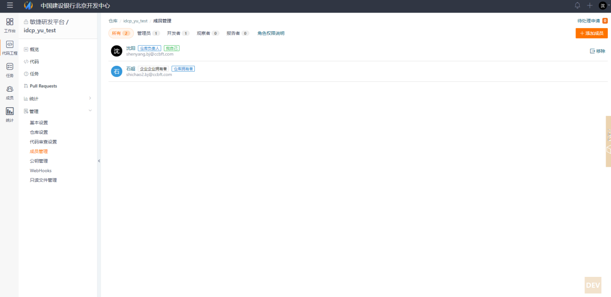
3.拉取CC流的静态视图
使用本地已有的CC流视图进行拉取，CC指令参考如下：
cleartool checkout
4.初始化本地git仓库
git bash 打开此目录：
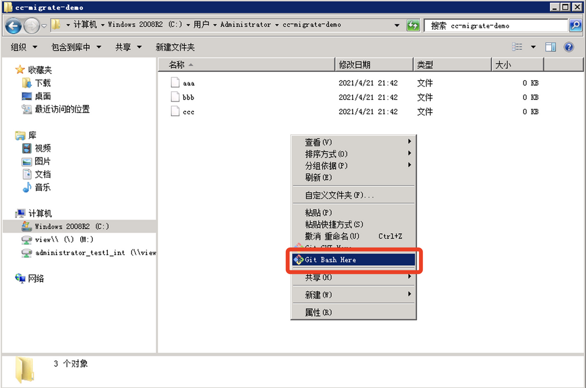
# git init 初始化git仓库
git init
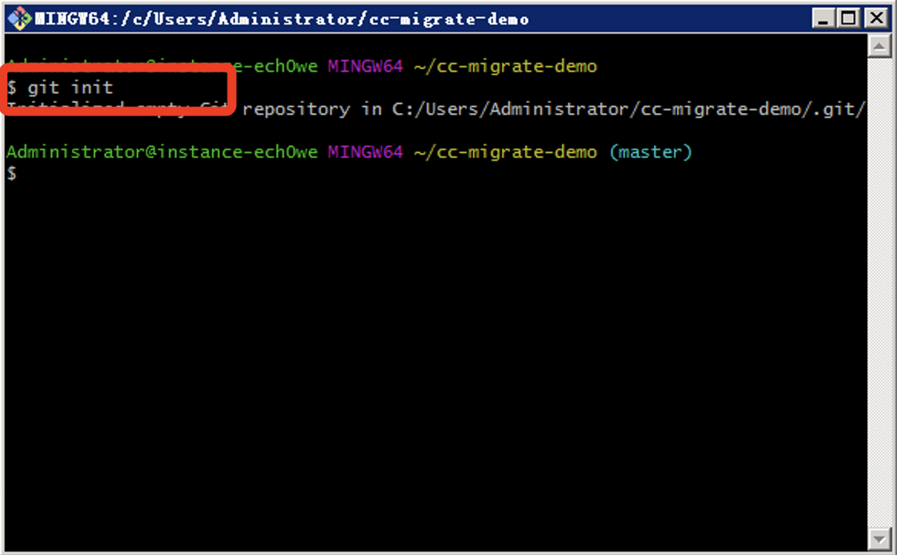
# gitcc init 开发流静态试图所在目录
gitcc init c:\\Users\\Administrator\\cc-migrate-demo
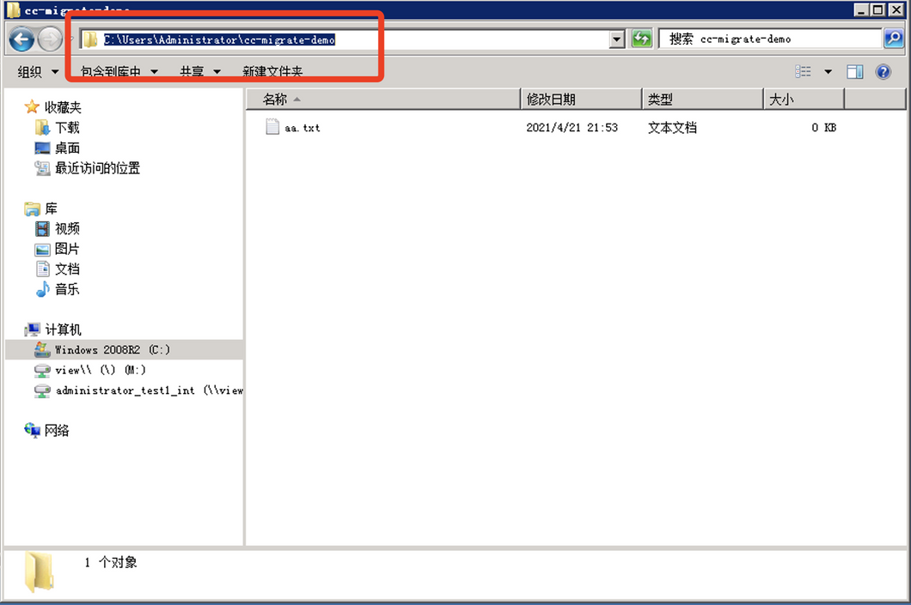
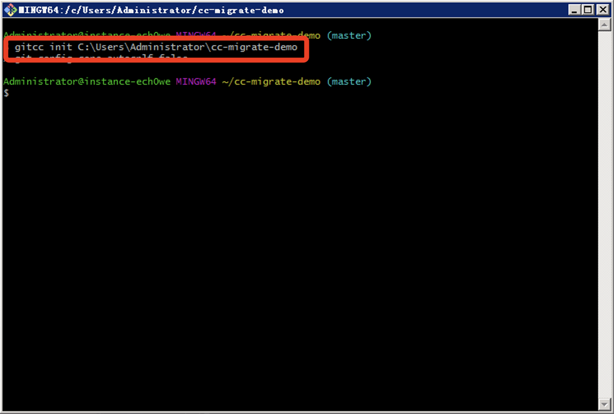
5.修改gitcc 文件
#配置
#[core]
# UCM
vim .git/gitcc
# clearcase = 静态试图所在目录路径
# 注意windows 下路径格式
[core]
type = UCM
[master]
clearcase = C:\\Users\\Administrator\\cc-migrate-demo
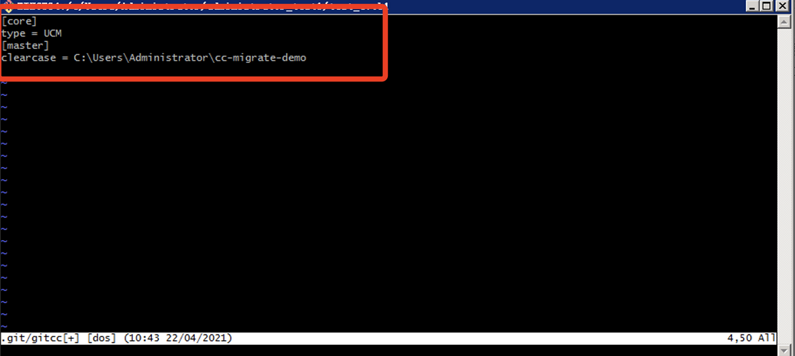
# gitcc update "自定义commit信息"
gitcc update "first commit"
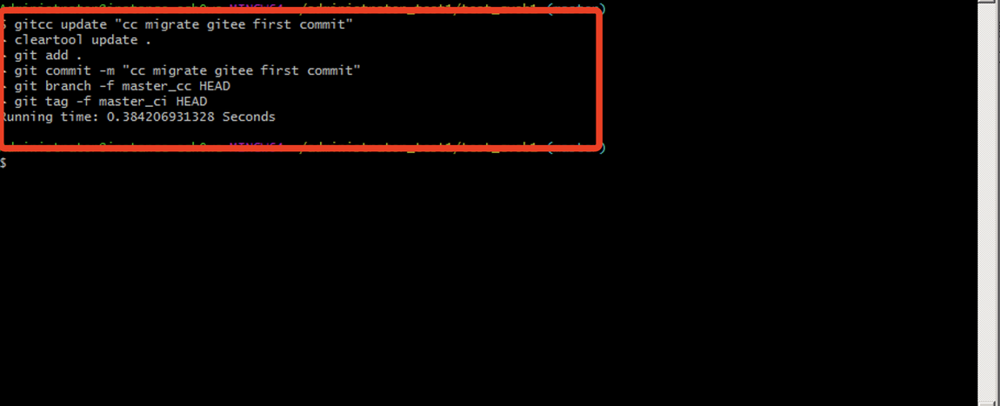
6.配置ssh公钥
# git bash
# 回车即可
ssh-keygen
#获取本地ssh公钥
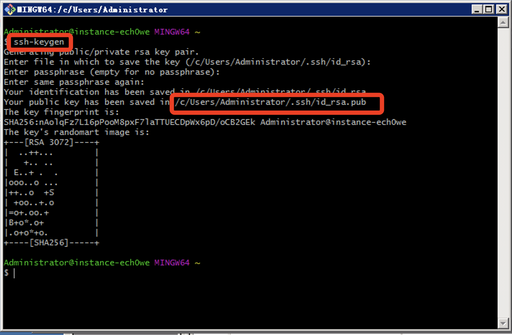
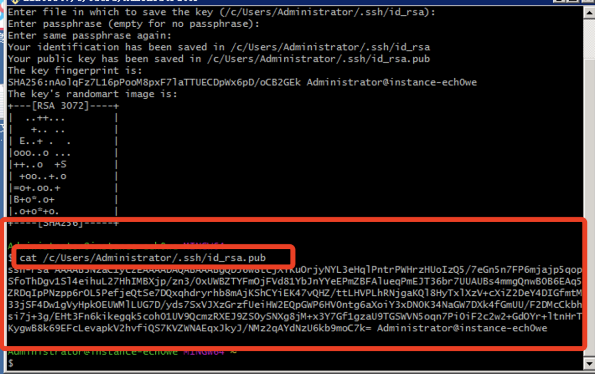
复制公钥并粘贴至Gitee：
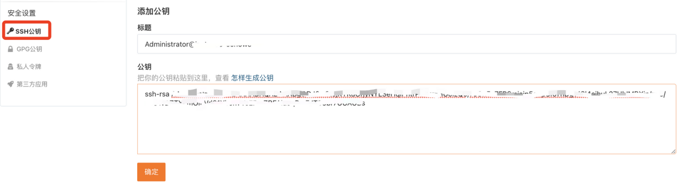
7.提交代码到代码托管模块
获取代码托管模块仓库地址:
点击左侧菜单【代码】，然后点击【克隆/下载】按钮，选择【http】协议标签，点击【复制】获取到代码托管模块仓库地址并将仓库地址复制到剪切板。
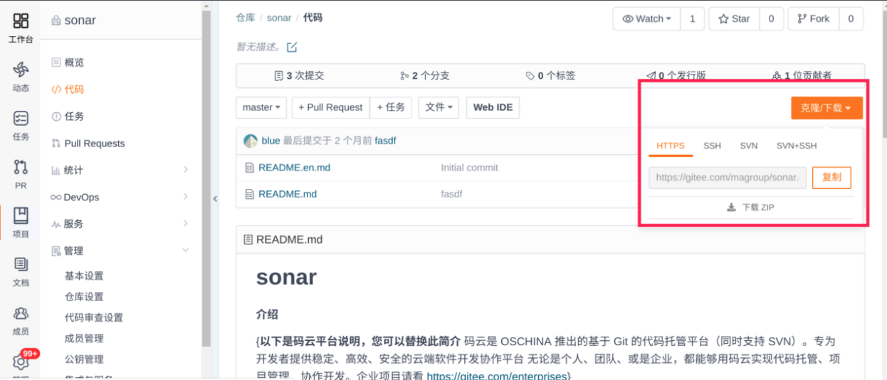
添加远端仓库地址并推送：
git remote add origin git@gitee.com:*/*****.git
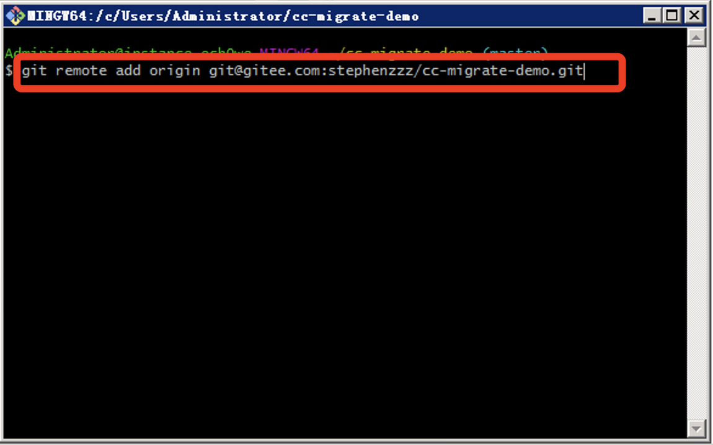
git push -u origin master
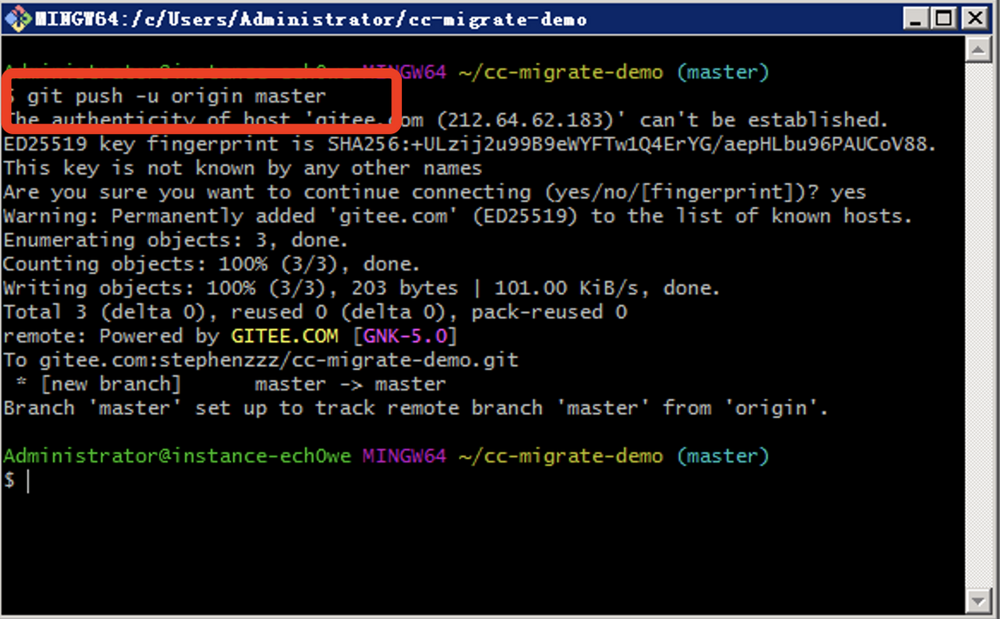
8.仓库的关联配置库变更
点击左侧菜单【代码工程】,选择需要变更的仓库，点击【管理】下菜单【基础设置】。选择关联配置库。点击【保存】按钮进行保存。
操作界面如图：
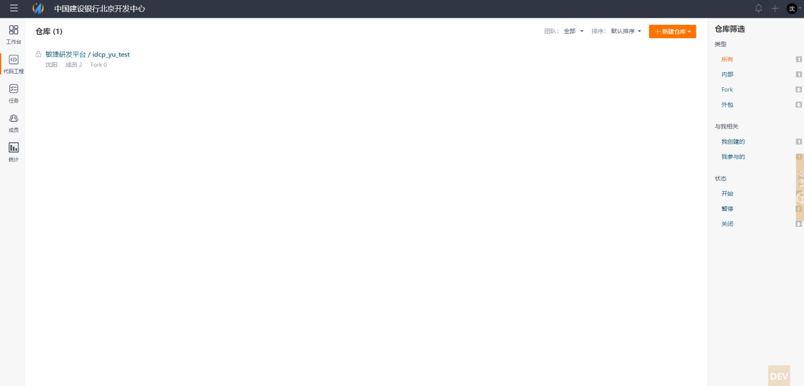
至此CC仓库迁移Git完成。